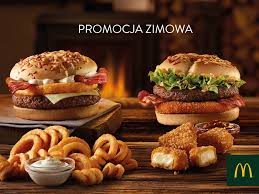

Link
McDonald’s jest jednym z największych pracodawców w Polsce – obecnie zatrudnia ponad 25 000 osób. Wśród pracowników są zarówno studenci, jak i seniorzy, a także osoby z niepełnosprawnością czy młode matki, łączące pracę z wychowaniem dzieci. Firma jest otwarta na różne grupy społeczne, a każdy z pracowników ma gwarantowaną umowę o pracę i taką samą szansę na awans. McDonald’s jest atrakcyjnym pracodawcą również ze względu na elastyczny grafik, który umożliwia pogodzenie pracy z innymi zajęciami. Kandydaci nie muszą mieć doświadczenia w gastronomii, ponieważ firma zapewnia niezbędne szkolenia.
Budowa każdej restauracji McDonald's> to inwestycja rzędu 6-7 mln złotych . W ostatnim czasie McDonald’s przeprowadził kompleksowy program zmiany wystroju swoich restauracji. Firma wychodząc naprzeciw nowym trendom w architekturze oraz zmieniającym się oczekiwaniom konsumentów, zmieniła wystrój wewnętrzny lokali, ich kolorystykę, a także same bryły budynków. Wyższy standard, komfort, łatwość korzystania, swobodna, sprzyjająca relaksowi atmosfera wiążą się ze zmianą filozofii McDonald’s, którą ujmuje przejście od hasła „Fast Food” do „Good Food Fast”.
| Burger | Energia (kcal) | Blonnik(g) | Bialko(g) | Sol(g) |
|---|---|---|---|---|
| Big Mac | 509 | 3.1 | 27 | 2.3 |
| McRoyal | 527 | 2.2 | 32 | 2.6 |
| Hamburger | 254 | 2 | 13 | 1.3 |
| Cheeseburger | 527 | 2 | 16 | 1.7 |
|  | kiedy wraca Drwala? :( |
| w ubiegłym roku Kanapka Drwala w McDonald's dostępna była od końca listopada. | |